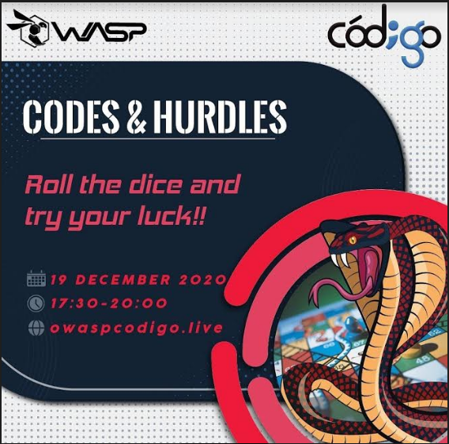
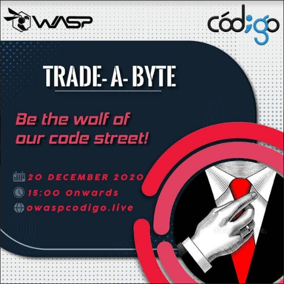
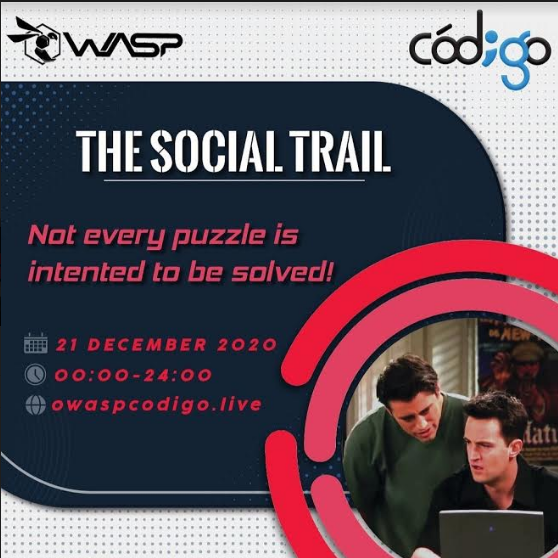
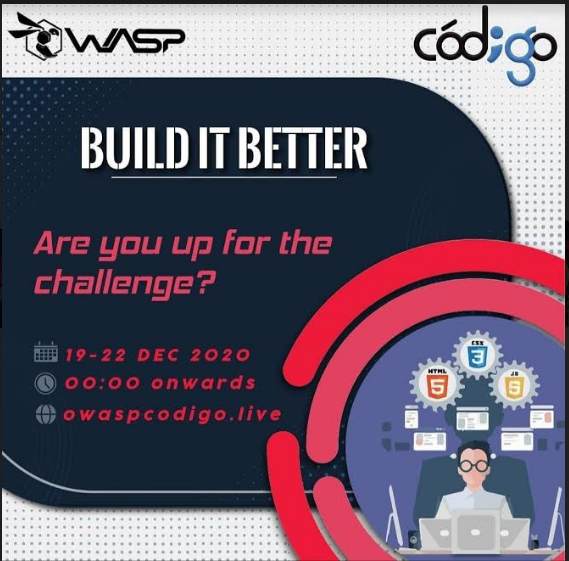

Event History
Codes and Hurdles
The amazing blend of rudimentary classic play “Snakes and Ladder” with Coding Cum Tech knowledge is what we will be presenting to you in this event of ours. Basically, there will be 6x6 grid, with some snakes and ladders and a dice, of course. The number you get on dice decides your position. The box you reach can have many possibilities.The final standings of the leaderboard will decide our winners!!
Trade-a-Byte
The best way to describe a programmer is, as a problem solver! Using the right programming statements at the right place is an art and only few possess this power. But what makes a simple coding competition much more fun is by adding a hint of economics in it. On these lines, Codigo brings you Trade-a-Byte, an interesting and fun amalgamation of economics and coding, pushing you to think outside the box.
The Social Trail
The event is a 24-hour long online treasure hunt with a flavour of Capture The Flag. Participants will have to solve different kinds of puzzles and riddles on each portal that will guide them to the next portal and ultimately leading them to the final problem that is going to be a coding question. The riddles will be based on popular TV shows and movies like Game of Thrones, Harry Potter, Friends, etc.
Build it Better
A 4 day long event where participants have to make a project focused on front end part using HTML, CSS and Javascript. Projects will be presented online on fourth day. How is it beneficial? This event will provide hands on experience with web development because watching and attending multiple videos and sessions will help only if we implement the concepts.
About Owasp, TIET
Thapar Institute of Engineering and Technology (TIET) has been a steady source of highly skilled talent to the nation as well as overseas.A pioneer in engineering education, research and innovation.The team of OWASP Student Chapter, one of the gilt-edged coding society, involves ingenious mind solvers who are eager to make the world a better place to live in with their innovative techniques and discoveries. By successfully organizing many hackathons, tech-talks, workshops and coding nights, we have always strived hard to maintain the coding culture throughout the campus.

Our Team